Every snowy December, the village races sledges down Snowdrop Hill for the Golden Bell. Biscuit-Bouncer has never won. He’s never even stayed on. This year he has a new partner, an old tin bathtub and a plan. All he has to do is sit still. And then, halfway down, he has to decide what winning is for.
27 printed pages · 8.1 MB · A4 or US Letter. Download PDF · Open PDF to printOpens in a new tab. Use the PDF viewer's Print control.
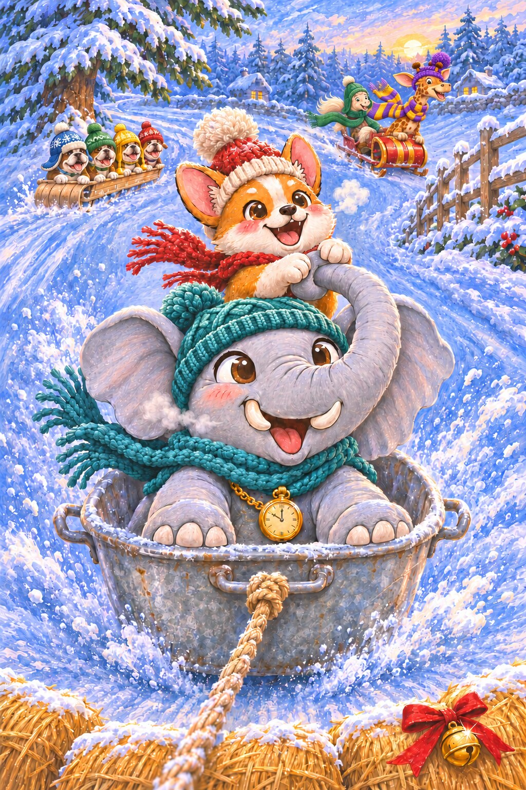
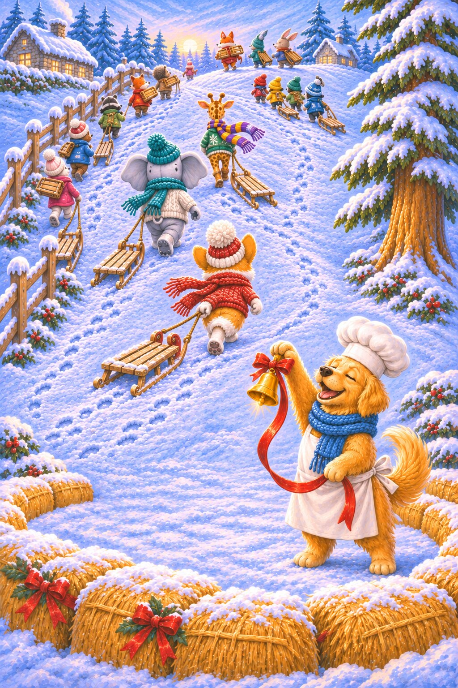
Page 1 of 26
On the first snowy Saturday of the Christmas holidays, everybody in the village climbed Snowdrop Hill for the Great Sledge Race.
At the bottom, beside a wall of straw bales, Bark-B-Q held up the prize. It was a small golden bell on a red ribbon.
Ding-a-ling, went the Golden Bell.
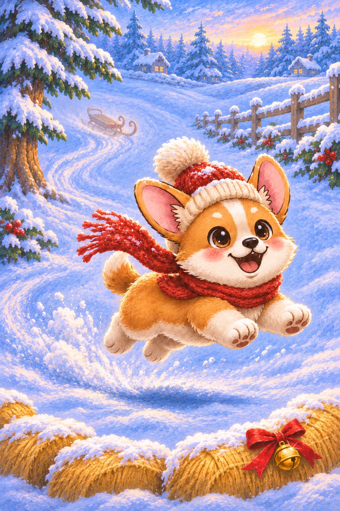
Page 2 of 26
Biscuit-Bouncer had raced every year. Every year, he had bounced off.
“I can’t help it,” he said. “When I’m excited, my legs go boing.”
This year, he wanted that bell more than anything.
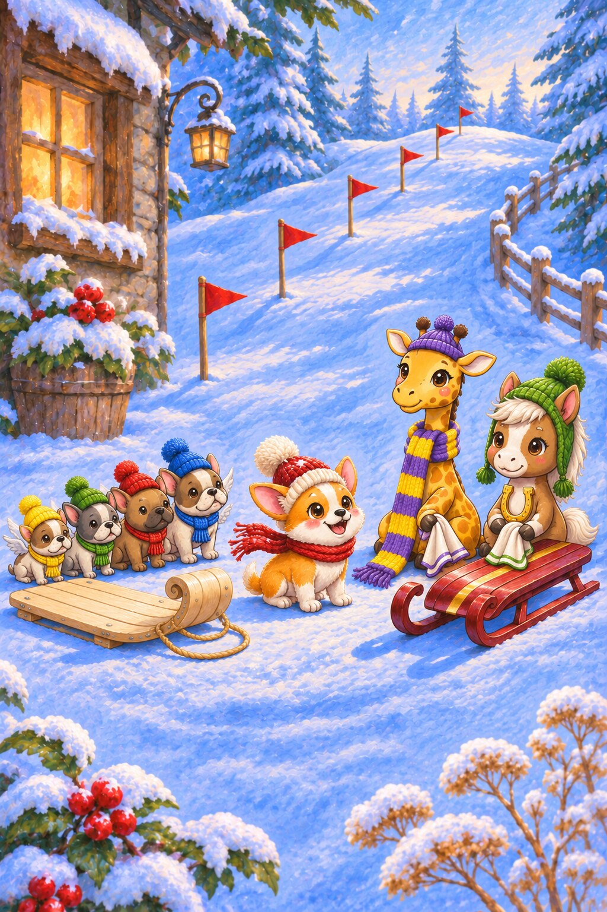
Page 3 of 26
The race was for teams of two.
Sail-Affe and Horse d’Oeuvre had the Red Flash, the fastest, shiniest sledge on the hill. The Baby Bulldogs had a long wooden toboggan. They were so small that all four counted as one team.
Everybody already had a partner. Everybody except Biscuit-Bouncer.
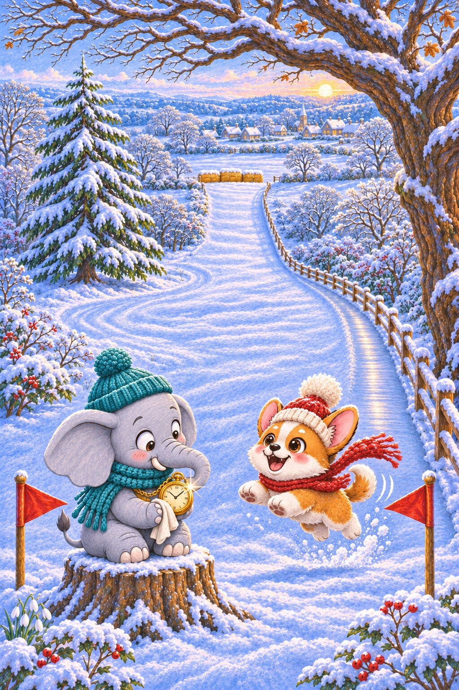
Page 4 of 26
And Tick-Tusk.
She sat on a tree stump, polishing her gold pocket watch. Somebody had told her she was too heavy for a sledge. “You’ll sink,” they’d said.
Biscuit-Bouncer bounced over. “Do you want to race with me?”
“I’ve never been on a sledge,” said Tick-Tusk.
“I’ve never stayed on one,” said Biscuit-Bouncer. “So we’re even.”
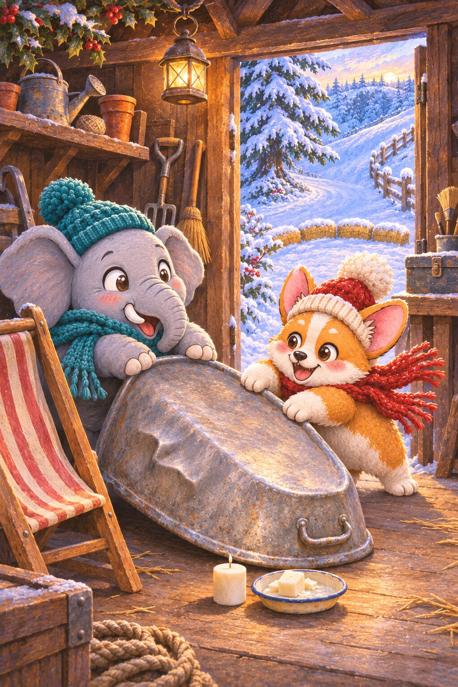
Page 5 of 26
They didn’t have a sledge. But in the back of Ted-E-Bear’s shed, they found an old tin bathtub.
“It’s a bath,” said Tick-Tusk.
“It’s a sledge now,” said Biscuit-Bouncer.
They rubbed candle wax all over the bottom to make it slippery. They tied a rope to the front. Then they dragged it up the hill.
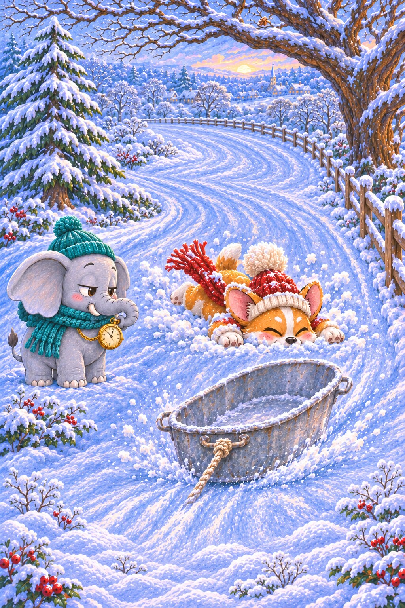
Page 6 of 26
The first practice went like this.
Biscuit-Bouncer pushed the bathtub, ran, and jumped in. “Ready... steady... BOUNCE!”
The bathtub slid away down the hill. Biscuit-Bouncer bounced straight out of the back of it into the snow.
Tick-Tusk clicked her pocket watch. “Very fast,” she said. “For a bathtub with nobody in it.”
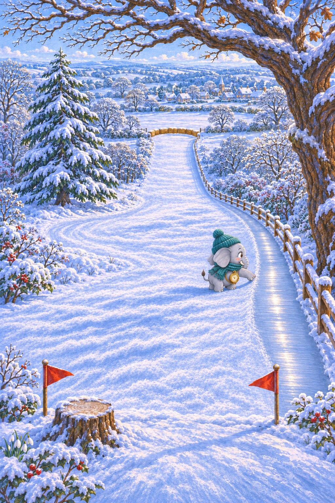
Page 7 of 26
Tick-Tusk walked all the way down the course and back up again. She looked at the snow very carefully.
“The middle of the hill is soft,” she said. “We’d sink. But the snow by the fence is packed hard. That’s the fast way. Then there’s the bend round the Big Fir. We have to lean into it together.”
“You’ve been watching,” said Biscuit-Bouncer.
“Every year,” said Tick-Tusk. “From the stump.”
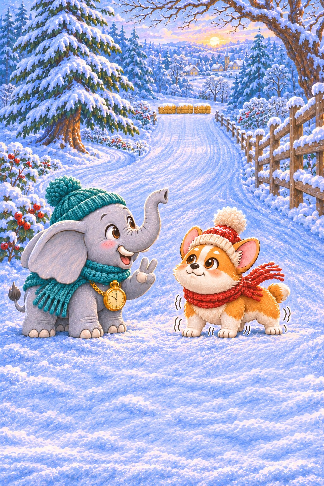
Page 8 of 26
“So here’s the plan,” she said. “You push. You’re the best pusher on the hill. I steer. And then, Biscuit-Bouncer, you sit still.”
Biscuit-Bouncer’s legs went boing just hearing it.
“When you want to bounce,” said Tick-Tusk, “hold on to my trunk.”
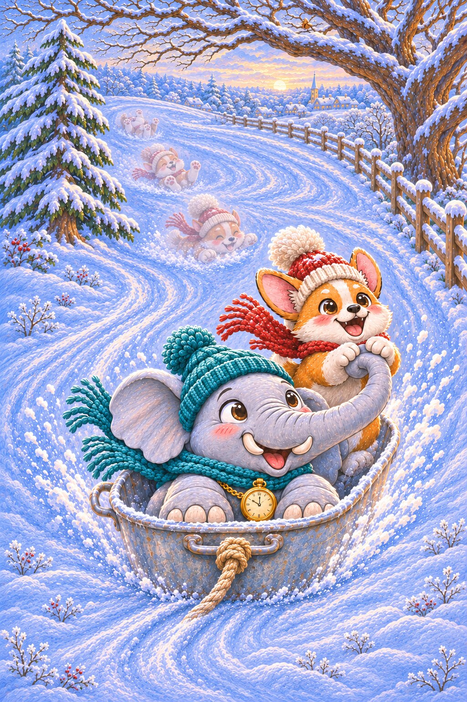
Page 9 of 26
They practised all afternoon.
Push. Jump in. Hold on. Sit still. Lean.
Biscuit-Bouncer fell out four times. Then three times. Then once. Then not at all.
Tick-Tusk clicked her watch. “Eleven seconds faster,” she said. Her ears flapped. She was smiling.
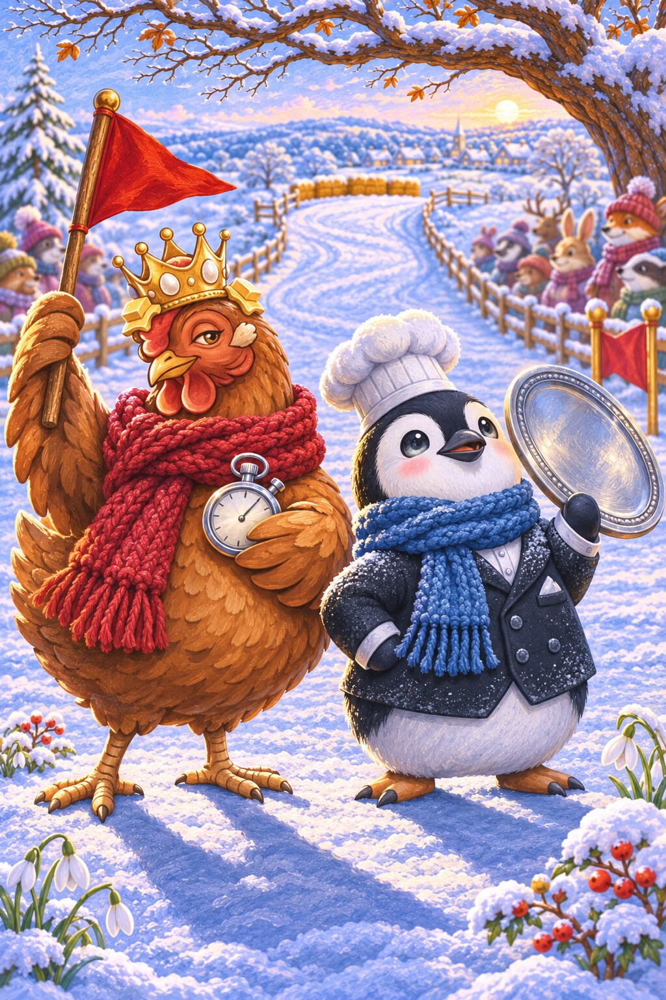
Page 10 of 26
On race day, the whole village lined the hill.
Eggs-Benedict stood at the top with her stopwatch and a red flag. Bark-B-Q stood at the bottom by the straw bales, with the Golden Bell.
Sub-Zero waddled up to the start line with no sledge at all. “I’ll just slide on my tummy,” he said.
“Sledges only, Sub-Zero,” said Eggs-Benedict.
So Sub-Zero borrowed a tea tray.
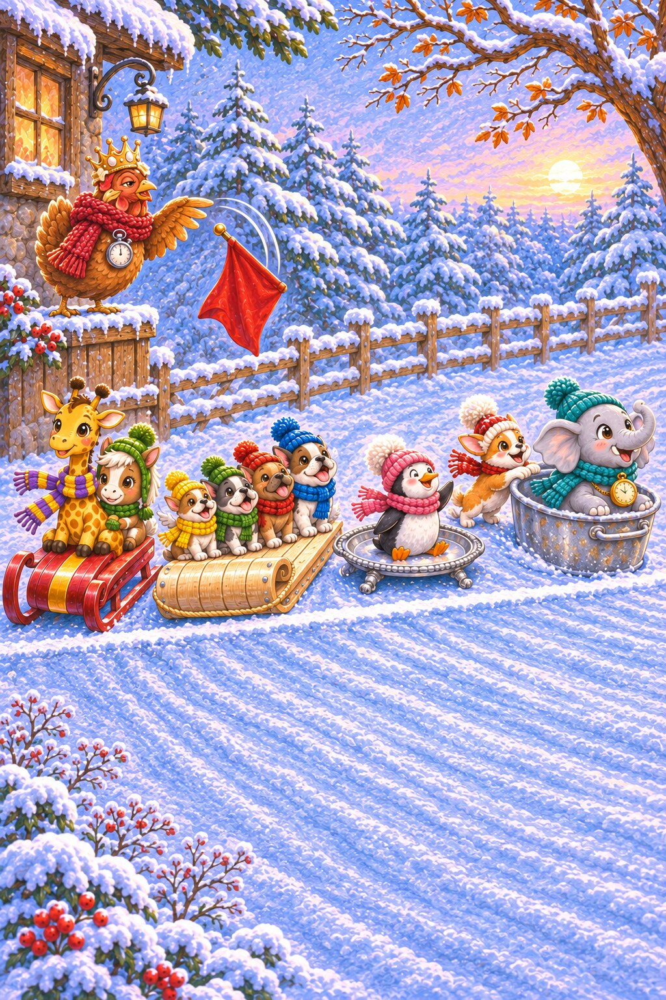
Page 11 of 26
Four teams lined up: the Red Flash, the Bulldogs’ toboggan, Sub-Zero’s tea tray and the bathtub.
Eggs-Benedict raised her flag.
“Ready... steady... GO!”
“BOUNCE!” shouted Biscuit-Bouncer, and pushed with all four legs.
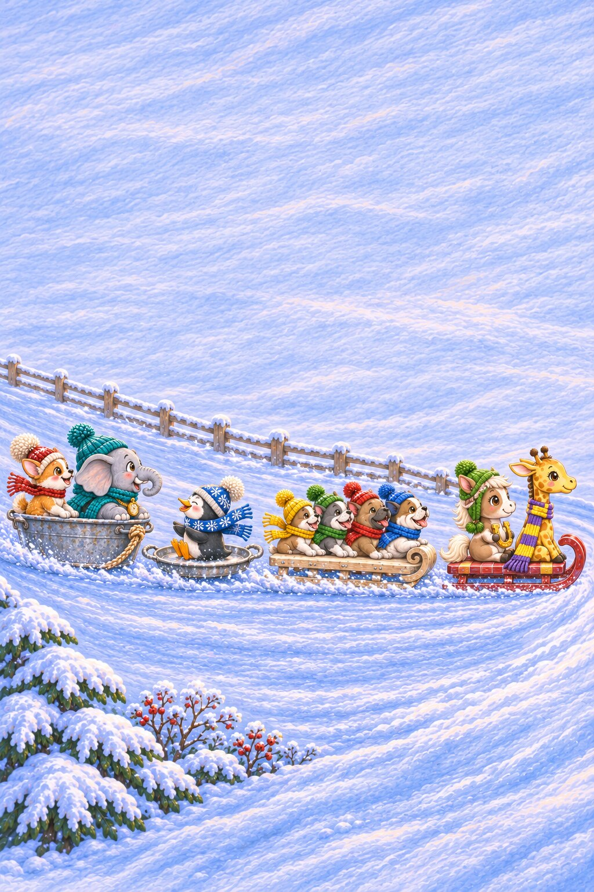
Page 12 of 26
The bathtub shot off the line.
Sub-Zero’s tea tray spun round and round and went down backwards. The Bulldogs’ toboggan wiggled like a puppy’s tail.
And the Red Flash went straight to the front, red and shiny and fast.
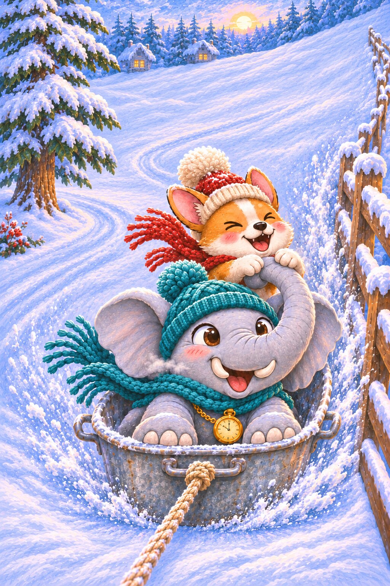
Page 13 of 26
Tick-Tusk steered the bathtub over to the hard snow by the fence. Whoosh! They began to catch up.
Biscuit-Bouncer’s legs went boing. He grabbed Tick-Tusk’s trunk and held on tight.
He sat still.
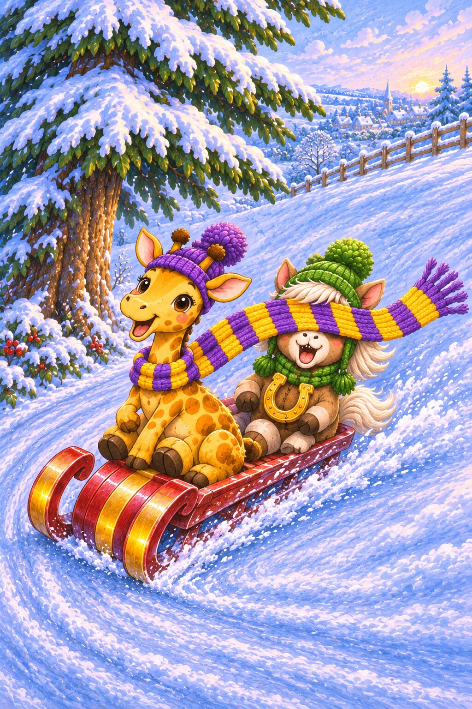
Page 14 of 26
Ahead of them was the Big Fir and the bend.
The Red Flash took the bend too fast. Sail-Affe’s long scarf flew up over Horse d’Oeuvre’s eyes.
“I can’t see!” cried Horse d’Oeuvre. “How do you stop?”
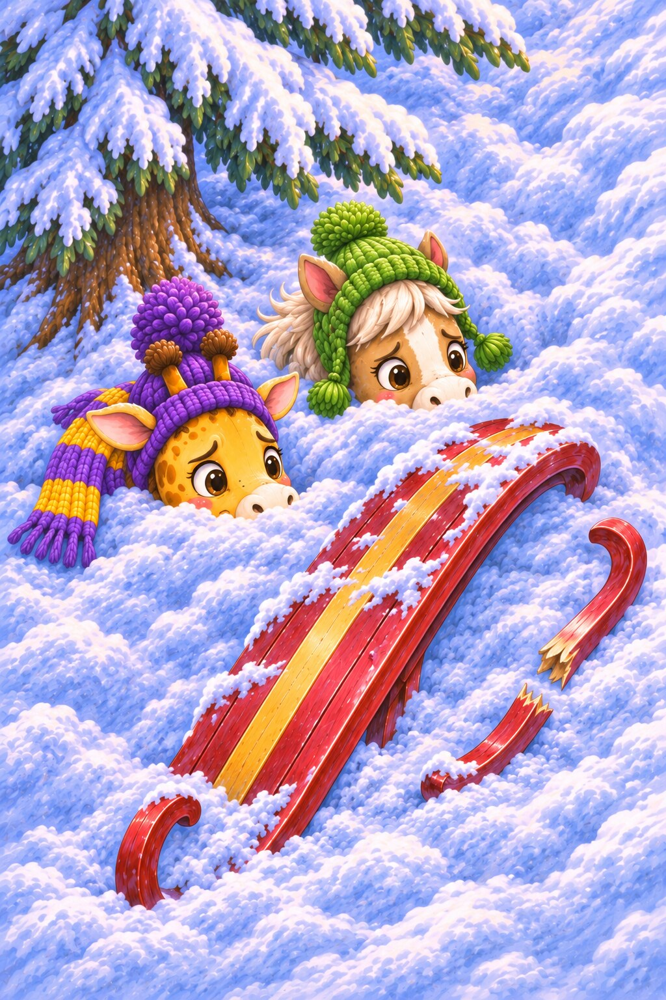
Page 15 of 26
The Red Flash spun round twice and ploughed into a deep snowdrift.
Nobody was hurt. But one of its runners had snapped, and Sail-Affe and Horse d’Oeuvre were sitting in the snow, up to their noses, with a broken sledge.
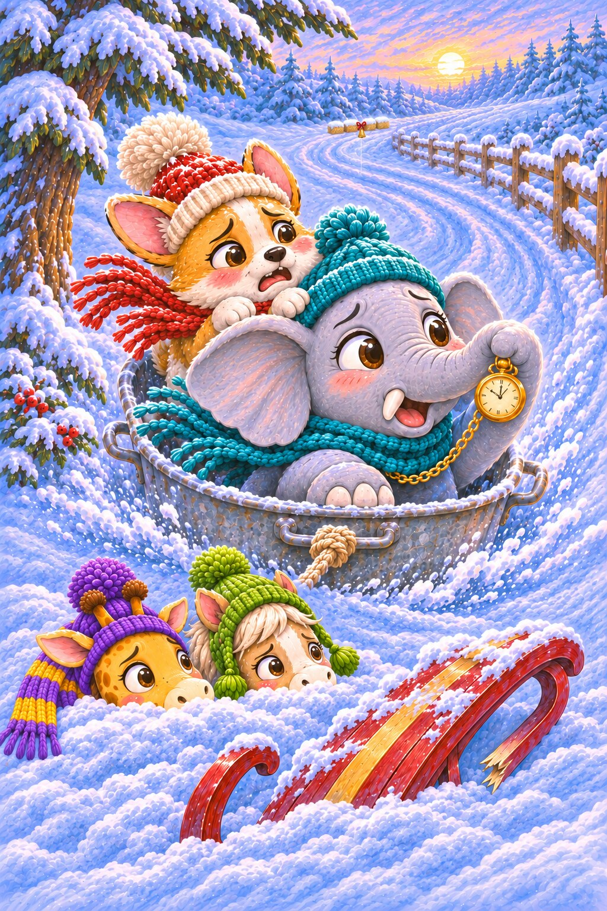
Page 16 of 26
Tick-Tusk looked at her pocket watch. “If we stop now,” she said quietly, “we lose.”
Biscuit-Bouncer looked down the hill at the Golden Bell, shining by the straw bales.
Then he looked at his friends in the snowdrift.
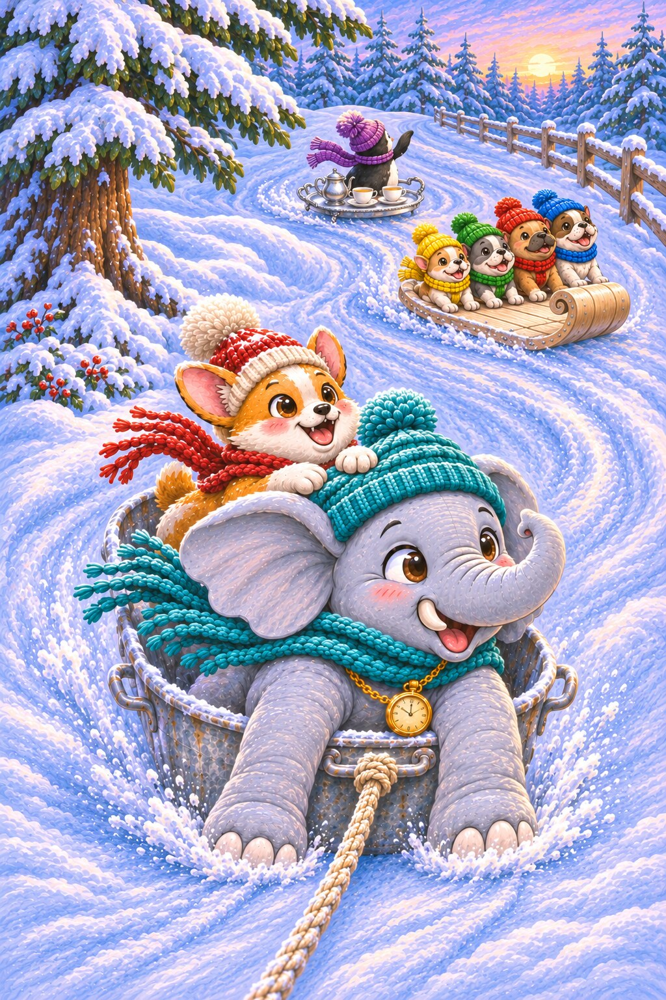
Page 17 of 26
“Lean, Tick-Tusk!” he said. “Lean and stop!”
Tick-Tusk leaned. She put down her big, flat feet, and the bathtub ploughed to a stop right beside the drift.
Behind them, the Bulldogs’ toboggan whizzed past, yipping. Then Sub-Zero went by, still backwards, waving.
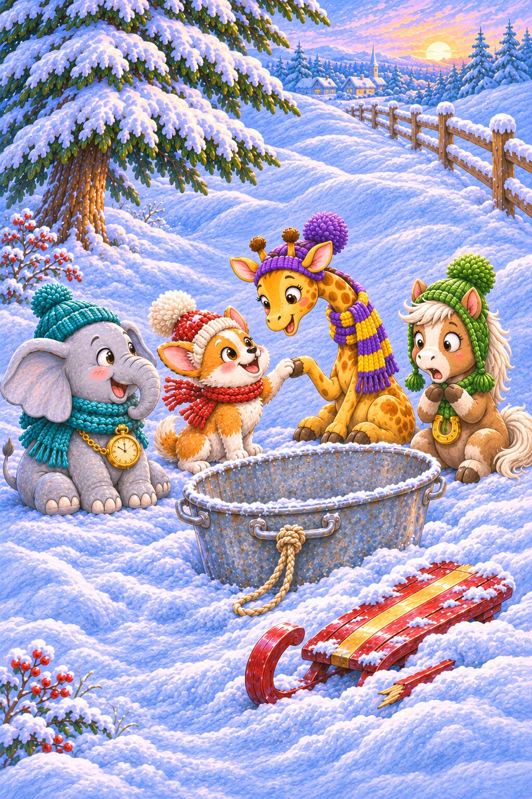
Page 18 of 26
“Are you hurt?” asked Biscuit-Bouncer.
“No,” said Sail-Affe. “But the Red Flash is broken. We’re out.” Her long neck drooped.
“Then come with us,” said Biscuit-Bouncer.
Horse d’Oeuvre stared. “In a BATH?”
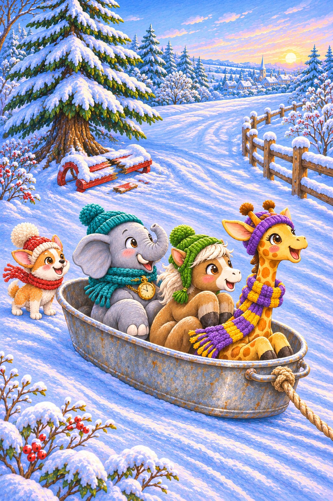
Page 19 of 26
“It’s a big bath,” said Tick-Tusk.
So Sail-Affe climbed in at the front, with her long neck sticking up like the mast of a ship. Horse d’Oeuvre squeezed in behind her, knees up to his nose. Tick-Tusk sat behind him, to steer.
That left a tiny space at the very back for Biscuit-Bouncer, if he sat very, very still.
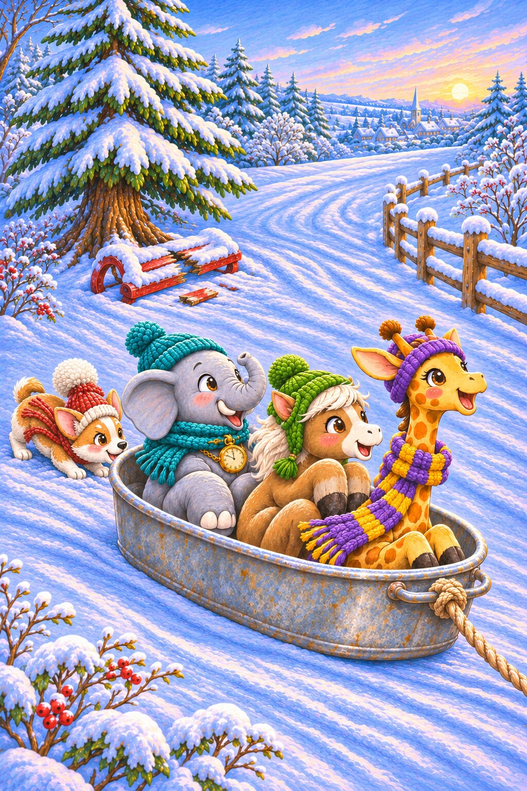
Page 20 of 26
They left the Red Flash safe in the drift, to fetch later.
Biscuit-Bouncer got behind the bathtub. It was much heavier now. He dug in all four paws.
“Ready... steady... BOUNCE!”
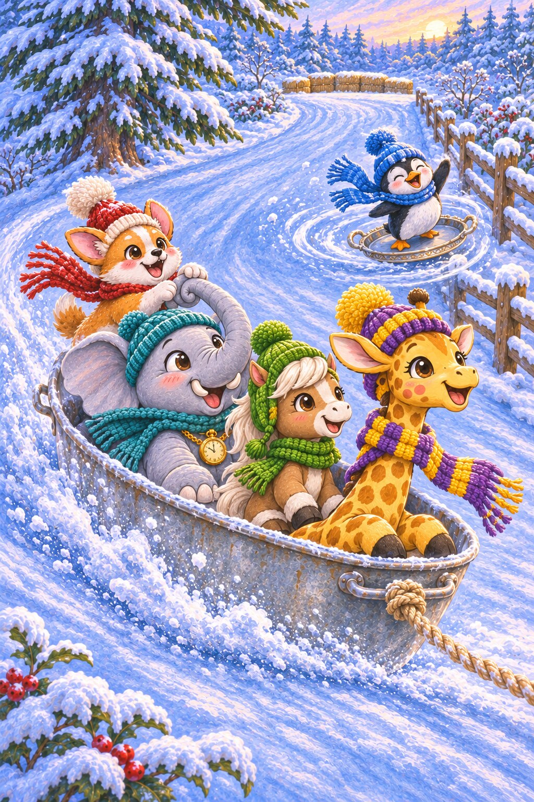
Page 21 of 26
The bathtub began to slide. Then it began to slide fast. Then it began to go faster than anything had ever gone down Snowdrop Hill.
Whoooooosh!
They shot past Sub-Zero. “Hello again!” he called, spinning.
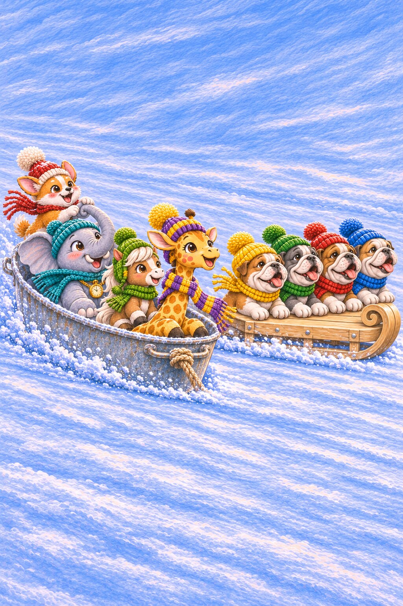
Page 22 of 26
On the last long straight, there was only one sledge ahead: the Bulldogs’ toboggan.
The bathtub drew level. Then it was side by side.
Biscuit-Bouncer’s legs went boing, boing, BOING. He held Tick-Tusk’s trunk with both paws.
“Sit still,” he told himself. “Lean together.”
Everybody leaned forward at once.
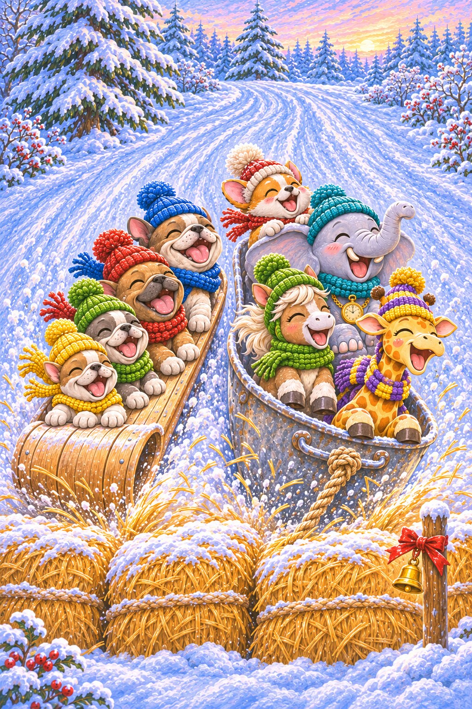
Page 23 of 26
WHUMP!
The bathtub and the toboggan hit the straw bales at exactly the same moment. Straw flew up into the air and came down again like golden snow.
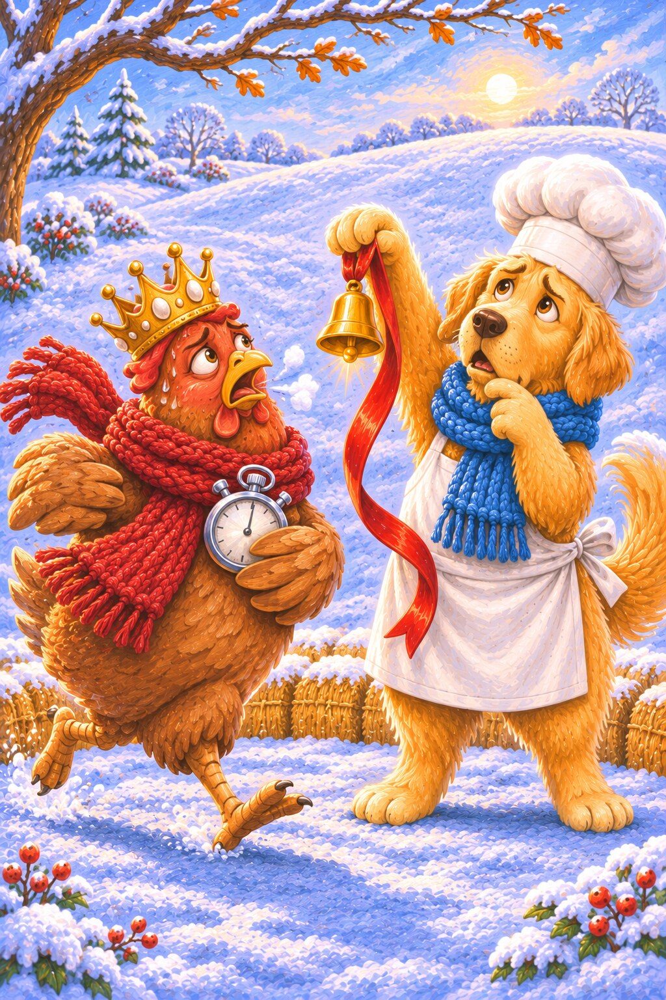
Page 24 of 26
Eggs-Benedict came running down the hill with her stopwatch.
“The bathtub,” she puffed, “and the toboggan... crossed the line... at exactly the same time!”
Bark-B-Q looked at the Golden Bell. “But there’s only one bell.”
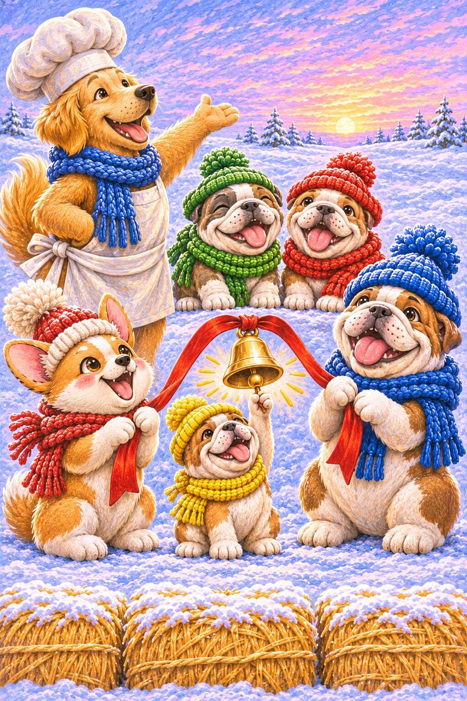
Page 25 of 26
The Bulldogs looked at Biscuit-Bouncer. Biscuit-Bouncer looked at the Bulldogs.
“You were in front all the way down the straight,” said Biscuit-Bouncer.
“You stopped for your friends,” said the biggest Bulldog. “We saw.”
So Bark-B-Q handed over the Golden Bell on its long red ribbon, and both teams held an end. The smallest Bulldog rang it. Ding-a-ling-a-ling!
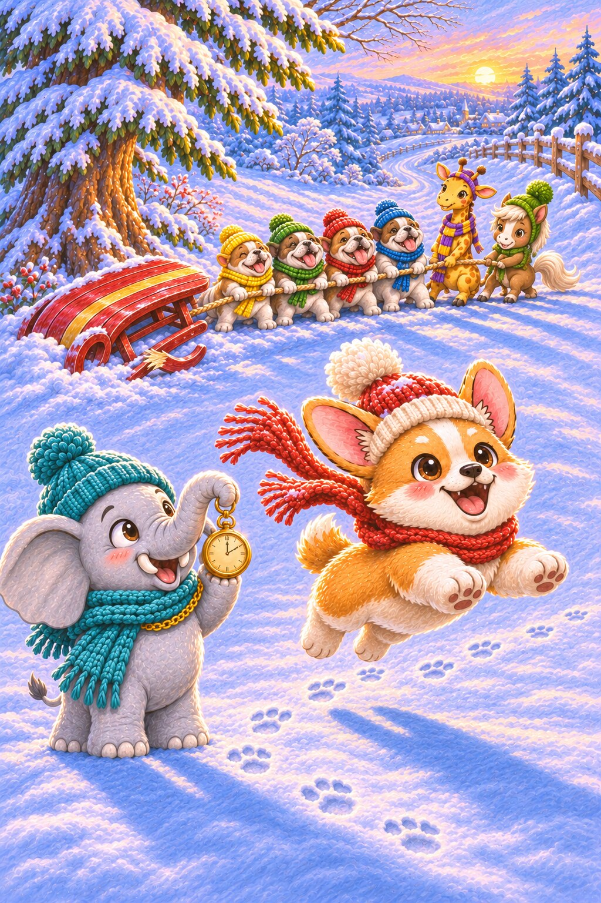
Page 26 of 26
Then everybody climbed back up the hill and pulled the Red Flash out of the drift together.
“I’ll fix the runner,” said Horse d’Oeuvre. “And next year, we’ll race you.”
Tick-Tusk clicked her watch. “Fourteen seconds faster than practice,” she said. “With four of us.”
Biscuit-Bouncer didn’t answer. He had sat still for long enough. He bounced all the way home.
The end · Thank you for reading
Share another story
A SnackPack original picture book, free to read together.